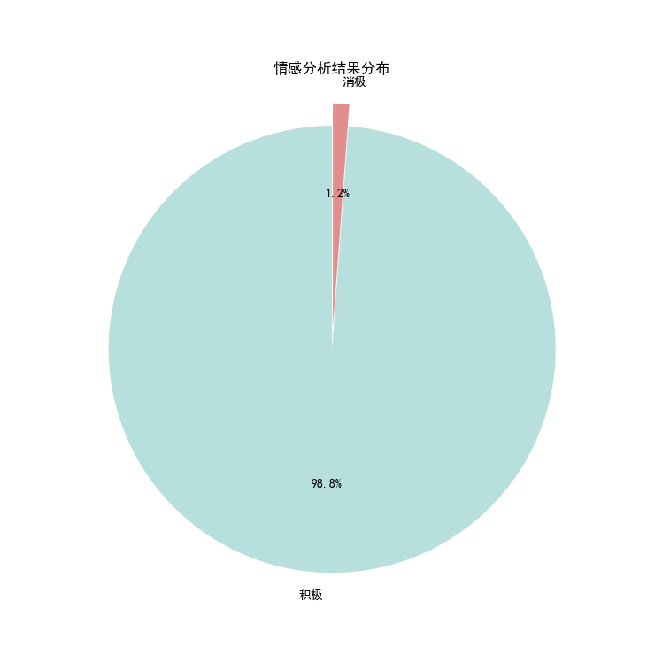
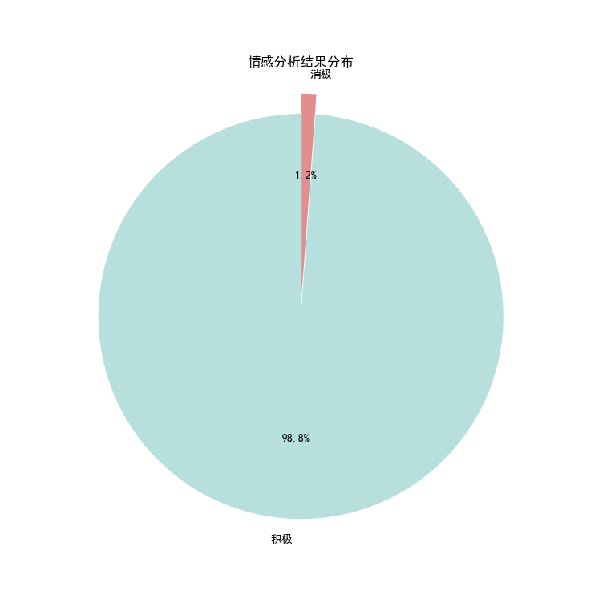

剧集简介
《Kill Me Heal Me》以男主角的七重人格为核心，通过深刻的情感描写和引人入胜的剧情，成为了一部备受观众喜爱的经典韩剧。本次分析基于豆瓣平台爬取的400条剧评，揭示了观众对这部剧的看法并简要分析其吸引力所在。
剧照与海报


剧情剪辑
数据分析结果
通过词频统计与情感分析，我们发现观众对七重人格的设定充满兴趣，并且对剧情的深刻主题和演员的精湛演技给予了高度评价。
- 高频词分析：“七” 以434次的提及率高居榜首，显然与剧中男主角拥有七重人格的设定息息相关。这一设定是《Kill Me Heal Me》的核心亮点，也成为观众热议的焦点。“人格”（228次）和“救赎”（189次）则体现了观众对剧中心理主题的深刻思考。这部剧不仅探讨了多重人格的复杂性，还通过角色间的互动和成长传递了治愈与救赎的情感。其他高频词如“剧情”（175次）和“悲伤”（164次）则表明观众对剧中情节的关注以及对情感描写的深刻体会。
- 情感分析：积极情感占比高达98.8%，绝大多数观众对这部剧持有正面态度。他们称赞剧中的深刻主题、演员的精湛演技以及引人入胜的剧情。消极情感仅占1.2%，少数负面评价可能与观众对部分剧情安排或结局的个人看法有关。综上，说明剧集受到了广泛的认可。
 

吸引力分析
- 剧情设定的独特性：男主角的七重人格设定无疑是这部剧的最大亮点。这种少见且复杂的设定让观众充满好奇，尤其是每个人格的鲜明特点和相互关系，为剧情增添了无限可能。
- 情感描写的深刻性：剧中对救赎与治愈的刻画打动了观众的心。通过多重人格的背后故事，剧集深刻探讨了人性中的脆弱与坚韧，这种情感共鸣成为其吸引力的重要来源。
- 演员的精彩表现：主演池晟在剧中成功诠释了七种截然不同的人格，每个人格的切换自然且真实，这种精湛的演技让观众为之折服。
总结
《Kill Me Heal Me》之所以能成为韩剧中的经典之作，不仅在于其独特的剧情设定和深刻的情感主题，更在于它成功引发了观众的共鸣与思考。通过数据分析，我们看到观众对这部剧的热爱与认可。它不仅是一部娱乐作品，更是一场关于人性、情感与治愈的心灵旅程。